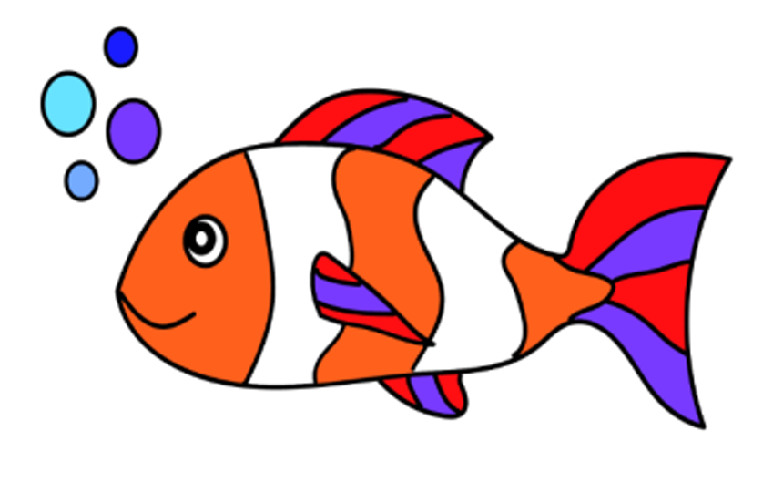

Fish
A fish (pl.: fish or fishes) is an aquatic, craniate, gill-bearing animal that lacks limbs with digits. Included in this definition are the living hagfish, lampreys, and cartilaginous and bony fish as well as various extinct related groups. Approximately 95% of living fish species are ray-finned fish, belonging to the class Actinopterygii, with around 99% of those being teleosts.